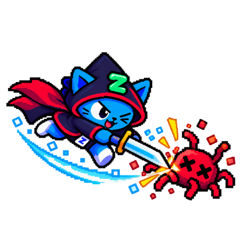
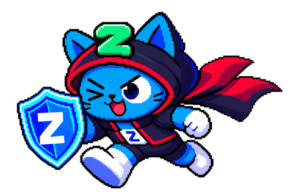

An toàn thông tin
mùa lễ hội
Chuỗi mùa lễ hội cuối năm từ Black Friday, Giáng sinh đến Tết thường là thời điểm Starter tất bật với những kế hoạch mua sắm, đặt vé du lịch và săn ưu đãi. Và đây cũng là lúc kẻ gian bước vào mùa hoạt động "cao điểm". Bản tin này sẽ giúp Starter nhận diện các chiêu thức lừa đảo tinh vi, chủ động thiết lập hàng rào bảo vệ trước kỳ nghỉ và nắm rõ quy trình ứng phó nếu không may gặp sự cố.
Vì sao kẻ gian "tăng ca" đúng lúc Starter nghỉ ngơi?
Các cuộc tấn công mạng dịp lễ không diễn ra ngẫu nhiên mà được tính toán kỹ lưỡng dựa trên ba "lỗ hổng" đặc trưng của thời điểm này:
Nhân sự trực mỏng
Có tới 78%[1] tổ chức cắt giảm từ một nửa nhân sự trực an ninh trở lên vào dịp lễ và cuối tuần. Đây là lý do khiến 52%[1] các vụ tấn công bằng mã độc tống tiền (ransomware) xảy ra vào đúng những ngày nghỉ này.
Tâm lý phân tâm của người dùng
Giữa hàng tá thông báo giao hàng, vé máy bay và mã giảm giá, sự cảnh giác thường giảm sút, tạo điều kiện cho các tin nhắn giả mạo dễ dàng trà trộn. Đặc biệt, các cửa hàng giả được dựng lên hàng loạt trước mùa mua sắm với 750 tên miền chủ đề lễ hội độc hại (trên hơn 18.000 đăng ký mới) và 2.900 tên miền chủ đề mua sắm độc hại (trên hơn 19.000 đăng ký mới)[2].
Ranh giới giữa công việc và cá nhân mờ đi
Thói quen mua sắm trên laptop công ty, kiểm tra email công việc trên điện thoại cá nhân hay dùng chung mật khẩu tiềm ẩn rủi ro rất lớn. Hiện có hơn 1,57 triệu[2] tài khoản đăng nhập các sàn thương mại điện tử lớn đang bị rao bán công khai trên chợ đen.
Thực tế tại Việt Nam
Trong 11 tháng đầu năm 2025, lừa đảo trực tuyến tại Việt Nam đã gây thiệt hại hơn 6.000 tỷ đồng[5]; khảo sát cho thấy cứ 555 người thì có 1 người trở thành nạn nhân, nhưng chỉ 32,12% trong số đó trình báo cơ quan chức năng[4]. Trên toàn cầu, FBI cũng ghi nhận tới 191.561 khiếu nại lừa đảo/giả mạo trong năm 2025 - loại tội phạm mạng được báo cáo nhiều nhất[3].
- [1] Semperis - 2025 Ransomware Holiday Risk Report
- [2] FortiGuard Labs - Báo cáo mùa lễ 2025
- [3] FBI IC3 2025
- [4] Hiệp hội An ninh mạng quốc gia NCA - Báo cáo khảo sát an ninh mạng 2025
- [5] Thống kê của Bộ Công an
Nhận diện 5 "mồi nhử" phổ biến và lưu ý khi thực hiện giao dịch
Kịch bản lừa đảo không mới, kẻ gian chỉ khoác lên chúng lớp áo của mùa lễ hội. Đặc biệt, với sự trợ giúp của AI, các tin nhắn giả mạo hiện nay được viết rất trôi chảy, tự nhiên và hoàn toàn không còn lỗi chính tả. Vì vậy, đừng chỉ dựa vào cảm quan câu chữ.
Năm hình thức lừa đảo phổ biến nhất tại Việt Nam (2025)[4]
- 1Mạo danh công an, cơ quan nhà nước
- 2Thông báo trúng thưởng, nhận quà tặngCAO ĐIỂM MÙA LỄ
- 3Mời gọi đầu tư lợi nhuận cao
- 4Giả danh shipper, nhân viên giao hàngCAO ĐIỂM MÙA LỄ
- 5Kết bạn, làm quen rồi dẫn dụ
Trúng thưởng và giả danh shipper xuất hiện quanh năm nhưng tăng vọt vào mùa mua sắm cuối năm.
NCA công bố thứ hạng mức độ phổ biến, không công bố tỉ lệ phần trăm cho từng hình thức. Nguồn: Hiệp hội An ninh mạng quốc gia (NCA), Báo cáo khảo sát an ninh mạng 2025, 01/2026.
Trước bất kỳ tin nhắn hay email lạ nào, Starter hãy dừng lại 3 giây và tự hỏi
- Mình có đang thực sự chờ đợi thông tin này không?
- Tin nhắn này đang yêu cầu mình làm gì (bấm link, đăng nhập, chuyển tiền hay cung cấp mã)?
- Nội dung có đang tạo áp lực ép mình phải hành động ngay lập tức không?
VÍ DỤ
Lưu ý khi đặt phòng và tour du lịch
Kẻ gian thường lợi dụng nhu cầu du lịch cuối năm qua 3 thủ đoạn:
- Lập website/fanpage giả mạo khách sạn để dụ đặt cọc rồi cắt liên lạc;
- Rao bán gói tour "nhượng lại" giá rẻ bất thường dùng hóa đơn và đánh giá giả (giao dịch nhỏ trôi chảy, giao dịch lớn thì biến mất);
- Gửi email xác nhận đặt phòng giả chứa link/tệp độc hại nhằm chiếm quyền thiết bị và tài khoản ngân hàng.
Ba dấu hiệu → DỪNG LẠI NGAY
- Mức giá rẻ khác thường so với mặt bằng chung;
- Tạo sức ép phải đặt cọc ngay ("chỉ giữ chỗ 30 phút");
- Tài khoản nhận tiền mang tên cá nhân thay vì tài khoản doanh nghiệp.
Chỉ cần một dấu hiệu xuất hiện, hãy dừng lại và xác minh.
Lưu ý khi thực hiện giao dịch
Đừng vội tin mã QR vì bạn không biết nó sẽ dẫn bạn đến đâu
Kẻ gian có thể dán đè mã QR giả tại quầy thanh toán để tiền chảy thẳng vào tài khoản cá nhân, hoặc phát tán mã QR trong nhóm chat núp bóng lì xì, quà tặng dẫn tới trang đăng nhập giả mạo (đã có nhiều trường hợp bị chiếm quyền tài khoản Zalo). Vì vậy, hãy thực hiện đủ 3 bước kiểm tra:
- Kiểm tra mép dán xem mã tại quầy có bị dán đè hay bong tróc không.
- Đối chiếu kỹ tên người nhận và số tiền hiển thị trước khi bấm xác nhận.
- Quan sát trang mở ra: nếu trang yêu cầu đăng nhập hoặc cài đặt ứng dụng lạ, hãy thoát ra ngay lập tức.
Quy tắc không có ngoại lệ về mã OTP
Không một ai được phép yêu cầu bạn đọc mã OTP - dù đó là ngân hàng, ví điện tử, sàn TMĐT, nhân viên hỗ trợ, đồng nghiệp hay cấp trên.
Bất kỳ ai hỏi mã OTP đều đang lừa bạn.
Checklist 3 việc Starter cần làm trước khi rời văn phòng nghỉ lễ
Thiết lập quy tắc "Xác minh chéo" cho mọi yêu cầu khẩn cấp
Các tin nhắn giả mạo cấp trên hoặc đối tác thường hội tụ đủ 3 yếu tố:
(ví dụ: "Anh đang họp, chuyển gấp giúp anh...").
Cách xử lý:
- Dừng lại ngay
- Gọi điện xác minh trực tiếp qua số điện thoại nội bộ đã lưu trong danh bạ
- Báo cáo sự việc cho bộ phận An toàn thông tin.
Bàn giao công việc đúng quy trình bảo mật
- Nên làm: Sử dụng tính năng ủy quyền (delegation) có sẵn trên hệ thống; gửi yêu cầu cấp quyền truy cập tạm thời theo đúng quy trình; lập văn bản bàn giao rõ ràng các đầu việc dang dở kèm người phụ trách; và nhớ thu hồi quyền truy cập ngay khi quay lại làm việc.
- Không nên làm: Chia sẻ mật khẩu cá nhân, dùng chung tài khoản hệ thống, hoặc tự ý chuyển tài liệu công việc sang email/ổ lưu trữ cá nhân để tiện theo dõi.
- Thiết lập thư trả lời tự động (Out-of-Office): Chỉ cần nêu rõ thời gian quay lại làm việc và thông tin liên hệ của người hỗ trợ thay thế. Tránh tiết lộ chi tiết lịch trình cá nhân (đi đâu, làm gì).
Thiết lập bảo mật cho thiết bị trước khi đi xa
- Phòng tránh mất hoặc thất lạc thiết bị: Kích hoạt tính năng tự động khóa màn hình và mã hóa ổ đĩa trên laptop trước khi đi. Ở sân bay, khách sạn hay quán đông người, thiết bị có thể biến mất chỉ trong vài giây - tuyệt đối không để laptop trong cốp xe hoặc hành lý ký gửi. Lưu sẵn địa chỉ email báo cáo sự cố security.zlp@vng.com.vn vào danh bạ để liên hệ nhanh khi cần.
- Cảnh giác với Wi-Fi công cộng & cổng sạc lạ: Kẻ gian thường tạo các mạng Wi-Fi giả mạo có tên gần giống mạng thật (ví dụ: Airport_Free_WiFi và Airport-Free-WiFi). Nếu cần xử lý công việc từ xa, hãy ưu tiên sử dụng điểm phát Wi-Fi từ điện thoại cá nhân kết hợp bật VPN công ty (nếu không có VPN, hãy gác công việc lại để tận hưởng kỳ nghỉ). Luôn mang theo dây và củ sạc riêng, hạn chế cắm vào cổng USB công cộng.
- Bảo vệ thông tin trước người xung quanh: Trên máy bay, trong quán cà phê hay sảnh khách sạn, màn hình của bạn không hề riêng tư. Hãy sử dụng miếng dán chống nhìn trộm và không thảo luận thông tin nội bộ qua điện thoại ở nơi công cộng.
Bỏ túi: 7 quy tắc vàng cho kỳ nghỉ an toàn
- 1
Nhận yêu cầu gấp từ cấp trên: Dừng lại → Xác minh qua kênh liên lạc khác → Báo cáo.
- 2
Đừng tin vào sự trôi chảy: Email viết hay và chuẩn ngữ pháp chưa chắc đã an toàn (AI làm việc này rất tốt).
- 3
Tin nhắn giao hàng: Không bấm link, tự kiểm tra trên ứng dụng chính thức.
- 4
Thông tin lương thưởng: Chỉ tin tưởng các thông báo từ kênh nội bộ chính thức.
- 5
Đặt dịch vụ du lịch: Giá rẻ bất thường, ép cọc gấp, tài khoản nhận tiền cá nhân - chỉ cần 1 dấu hiệu là dừng lại.
- 6
Thanh toán QR: Kiểm tra mép dán tại quầy, soi kỹ tên người nhận và số tiền trước khi bấm xác nhận.
- 7
Mã OTP là bất khả xâm phạm: Không chia sẻ cho bất kỳ ai, không có ngoại lệ.
Làm gì nếu lỡ "sập bẫy" kẻ gian?
Nếu Starter đã trót bấm vào đường link lạ, nhập thông tin đăng nhập hoặc thực hiện chuyển khoản nhầm, hãy báo cáo đến bộ phận hỗ trợ liên quan hoặc cơ quan có thẩm quyền ngay lập tức. Trong an ninh mạng, từng phút trôi qua đều quyết định mức độ thiệt hại:

TRONG VÀI PHÚT ĐẦUCơ hội vàng: Đội ngũ kỹ thuật có thể kịp thời khóa tài khoản, chặn giao dịch và đăng xuất toàn bộ các phiên truy cập trái phép.
Rủi ro đã bắt đầu lan rộng sang các hệ thống liên quan, việc khoanh vùng và khắc phục trở nên phức tạp, tốn kém hơn nhiều.
Thường đã quá muộn. Tài sản đã bị tẩu tán và dữ liệu quan trọng có thể đã bị đánh cắp hoàn toàn.

Luôn đề cao cảnh giác - Chủ động kết nối khi cần
Hãy duy trì sự cẩn trọng trước mọi giao dịch và thông tin lạ trong dịp lễ. Nếu có bất kỳ nghi ngờ nào hoặc không may xảy ra sự cố ngoài ý muốn, đừng ngần ngại liên hệ ngay với bộ phận Security để được hỗ trợ xử lý kịp thời, bảo vệ an toàn tối đa cho tài khoản và dữ liệu của bạn!
📩 Kênh tiếp nhận & hỗ trợ khẩn cấp 24/7security.zlp@vng.com.vn